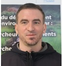

Assistant ingénieur en partenariats, valorisation de la recherche et coopération internationale
Présentation
Professionnel de l’appui à la recherche universitaire, spécialisé dans la coordination scientifique internationale, la gestion de projets et la valorisation de la recherche. À l’UMI SOURCE, accompagnement des partenariats, des réseaux doctoraux et de la science ouverte entre les antennes en France, au Sénégal, en Côte d’Ivoire et à Madagascar.